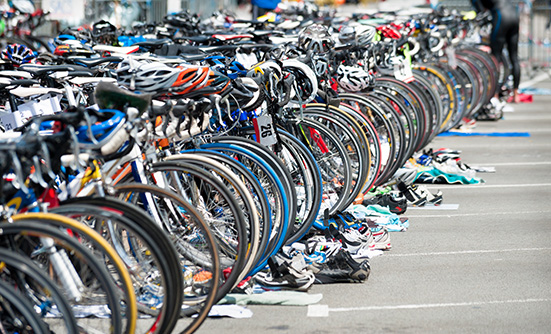

Getting Enough Carbs on a Gluten Free Diet
Jessica Cornwall Nutrition will always be a controversial topic, especially with the variety of diets out there, but there is one specific fact that will always remain—athletes, whether they are recreational or competitive, need carbohydrates to fuel their performance.
Gluten-free diets are becoming more popular today. Many individuals are choosing to go gluten-free even if they are not gluten intolerant. Gluten is the protein found in all wheat and wheat-related products. By eliminating gluten in one’s diet the correct way, you eliminate majority of the harmful blood-sugar spikes, gastrointestinal discomfort, headaches, fatigue, inflammation, allergies, weight issues, several factors that increase the risk for Heart Disease, and the list goes on. The only downside to going gluten-free is that many individuals do not do it the right way and end up not fueling themselves with enough carbs and then will feel tired, weak and hungry. Athletic performance will also take a nosedive.
Although carbohydrates are crucial for recovery to endurance athletes who participate in events that have a moderate intensity and long duration, like an ultrarun, ultraswim, or half-Ironman, their performance is primarily fueled by lipids (fats). However for athletes who participate in higher-intensity events with somewhat shorter duration, the exercise is primarily fueled by carbohydrates. It is recommended that an endurance athlete should intake between 5-7 g/kg/day of carbohydrates during the off season, but during heavy training and racing season the carbohydrate intake should be as high as 12-19 g/kg/day. Some variables that impact these numbers are the intensity and duration of training, environment, and gender. Carbohydrate loading for competition is also common in these sports. So the question is, how do you get these recommended carbohydrate portions while on a gluten-free diet?
The key to getting enough carbohydrates to fuel performance is to eat very dense carb sources. The most recommended way to eat very dense carb sources is to make sure you are eating REAL foods. The best source for gluten-free dense carbs is vegetables
Many times when individuals go gluten-free, they eat corn based foods or very artificially processed foods instead of the real deal. Even if a packaged food has a label on it that says “gluten-free,” most likely it was processed and has many chemicals and artificial ingredients. These ingredients can cause more harm than good, so read the label first! If there are chemicals on there that you can’t pronounce, or if corn is the first ingredient on the list—put it back. Corn is fed to cows to make them nice and fat, you don’t need that. Eat your vegetables, just like your mother told you!
This list includes, but is not limited to, some of the most popular and carbohydrate dense vegetables:
Incorporate these dense carb vegetables into your diet, preferably as a post-workout meal or snack. Within the first 30 minutes after training and at 2-hour intervals thereafter, eat 1.0 to 1.2 grams of carbohydrate per kilogram of body weight.
A carb-loading regimen can be done also using dense carbohydrate sources beginning 7 days before a race. Consume 5 grams of carbs per kilogram of body weight daily from days 7 to 4 prior, and on days 3 to 1 before the race consume 10 grams of carbs per kilogram of body weight daily.
Don’t be afraid of carbohydrates—the right ones are not the source of the many health problems we face today. Your body uses them as fuel and if you follow the proper nutritional recommendations, you should have no problem while eating a gluten-free diet. Don’t be afraid to try new foods and find what works best for you.